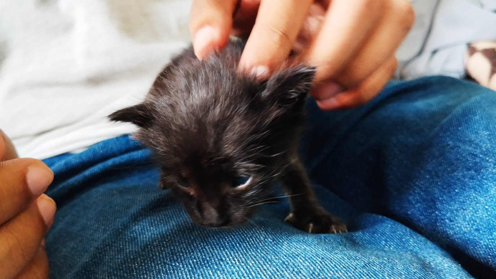

Paw Stories
About Paw Stories
Welcome to Paw Stories, where every wag, purr, and chirp is met with compassion and care. Founded with a deep love for animals and a commitment to their well-being, Paw Stories is more than just an organization - it's a family dedicated to making a difference in the lives of animals in need. At Paw Stories, we believe that every animal deserves a chance at happiness and security. Whether they've been abandoned, abused, or simply lost, we open our doors and our hearts to provide them with the love, support, and care they need to thrive.
How we help?
At Paw Stories, we're committed to making a difference in the lives of
animals through:
Sheltering: Providing a safe haven for animals in need,
offering them comfort, care, and a second chance at finding a loving
forever home.
Adoption Programs: Facilitating adoptions to match animals with
loving families, creating lasting bonds and happy endings for both
pets and their new owners.
Veterinary Assistance: Offering essential veterinary care,
including vaccinations, spaying/neutering, and medical treatment, to
ensure the health and well-being of every animal in our care.
Community Outreach: Engaging with our community to raise
awareness about animal welfare issues, promote responsible pet
ownership, and foster a culture of compassion and empathy towards all
creatures.